Partnerships & Stakeholder Engagement
Effective partnerships and stakeholder engagement are cornerstones of resilient and high-performing health systems. Collaboration across government agencies, non-governmental organizations, community-based organizations, donors, and private sector actors ensures that programs are coordinated, resources are optimized, and interventions are responsive to local needs. By engaging stakeholders from planning through implementation and evaluation, health initiatives are better positioned to achieve sustainable outcomes and equitable impact World Health Organization.
In 2023, global health programs reported that over 70% of successful large-scale interventions relied on multi-sectoral partnerships to align strategies, mobilize resources, and ensure accountability. Stakeholder engagement is not only about coordination—it is about building trust, co-creating solutions, and enabling real-time feedback mechanisms that inform program adaptation. Evidence from the Global Health Security Agenda shows that programs with strong stakeholder networks respond more effectively to outbreaks and emergencies, reducing morbidity and mortality across affected populations Global Health Security Agenda.
Community involvement is a critical component of stakeholder engagement. Programs that integrate community representatives in decision-making, planning, and monitoring are more likely to achieve high uptake of interventions, improve equity, and sustain outcomes over time. For example, in Sub-Saharan Africa, immunization campaigns that leveraged local health committees and volunteer networks achieved 20-30% higher coverage in hard-to-reach populations UNICEF.
Strategic stakeholder engagement also strengthens governance and accountability. When partners share data, insights, and lessons learned, programs can adapt more quickly to emerging challenges, identify gaps, and scale interventions efficiently. This collaborative approach aligns with international best practices in health systems strengthening, emphasizing co-creation, transparency, and joint responsibility for results World Health Organization.
Collaborations are essential for effective health programs. Click on any partner below to explore the initiatives and projects implemented together.
 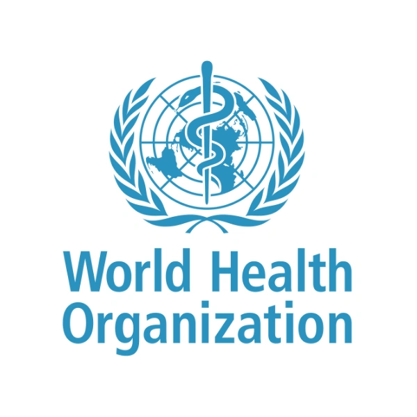
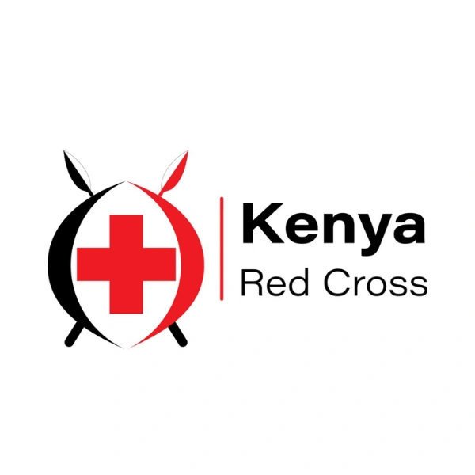
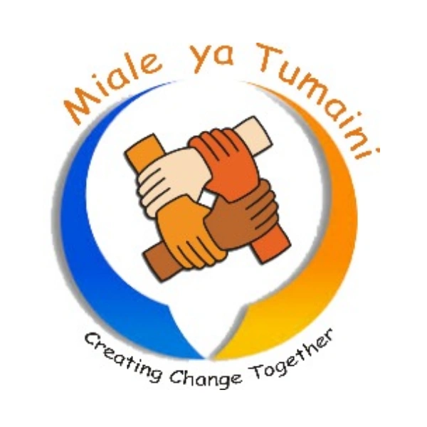
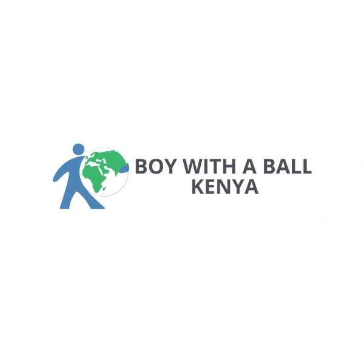
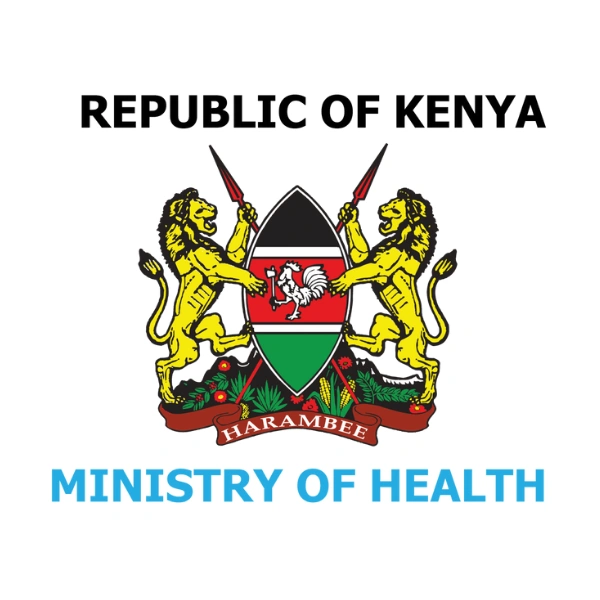
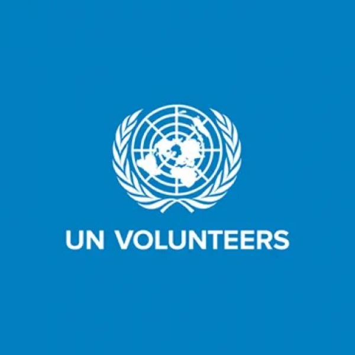
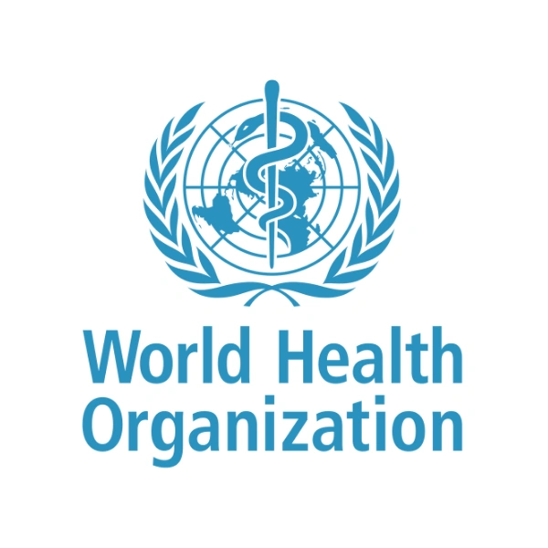
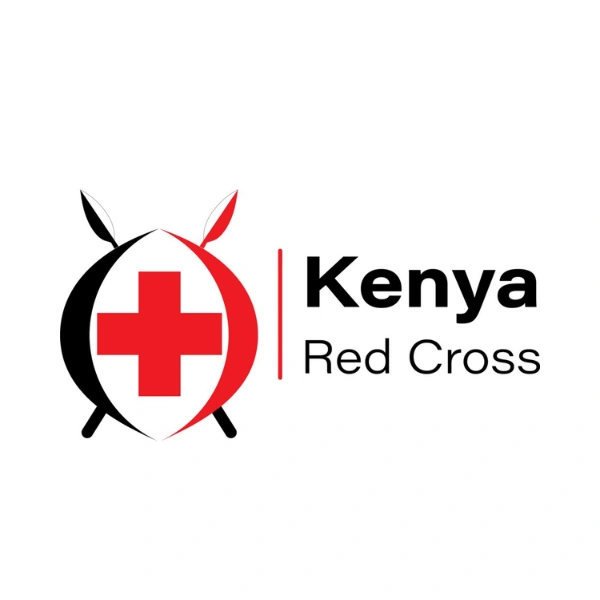
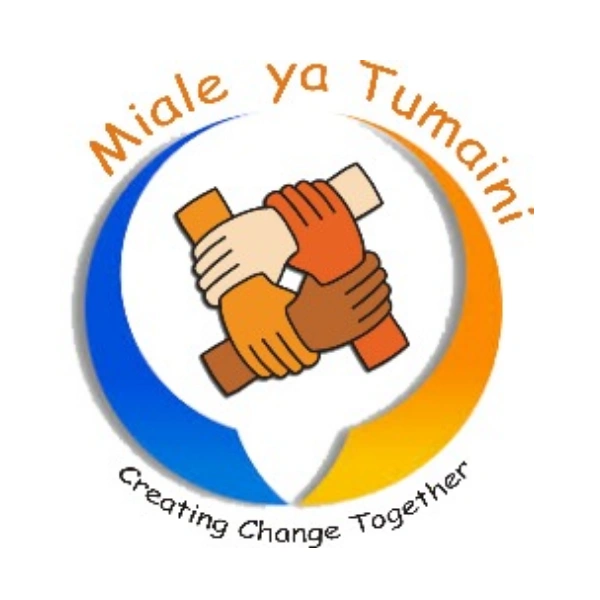
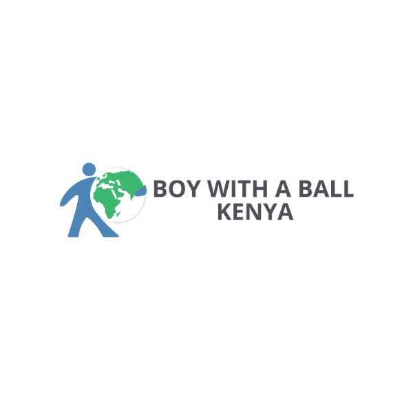
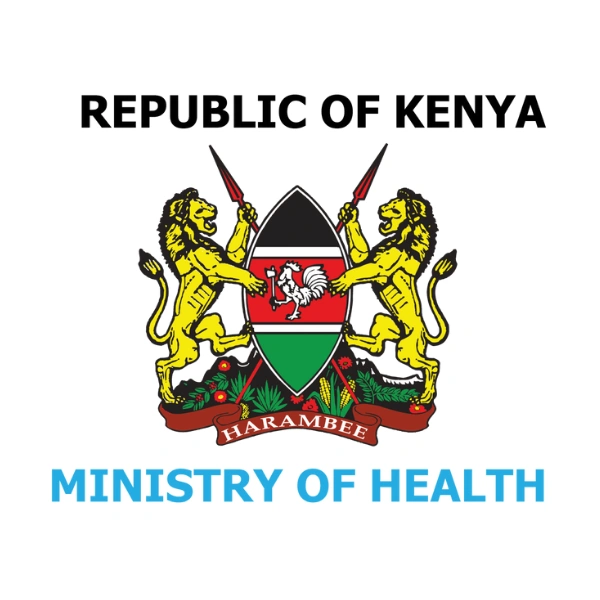
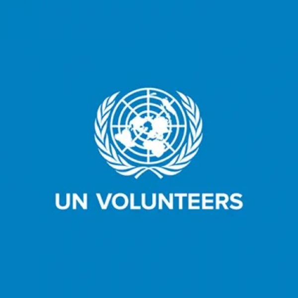
Certificate of Recognition — UNDP
Core Focus Areas in Partnerships & Stakeholder Engagement
Multi-sectoral Collaboration
Successful health programs increasingly rely on cross-sector collaboration to achieve broader impact. By building relationships across government, private sector, NGOs, and academia, programs can align objectives, pool resources, and leverage complementary expertise. Such collaboration helps address complex health challenges that no single organization can solve alone, from disease prevention to strengthening health infrastructure. Evidence shows that multi-sectoral approaches improve program sustainability and amplify outcomes across communities.
Community & Institutional Partnerships
Engaging local communities and institutions is critical to program reach and acceptance. By partnering with schools, religious institutions, community-based organizations, and local leaders, programs can ensure interventions are culturally appropriate, context-sensitive, and widely supported. Studies indicate that programs integrating community-driven approaches experience higher uptake and longer-term behavioral change. In practice, these partnerships help identify local barriers, co-create solutions, and increase trust between implementers and communities.
Strategic Alignment & Coordination
Effective partnerships require clear alignment of goals, priorities, and operational plans among all stakeholders. Coordination mechanisms, such as joint steering committees or regular inter-agency meetings, ensure resources are efficiently allocated, duplication is minimized, and initiatives complement one another. Research demonstrates that coordinated multi-partner programs enhance coverage, reduce fragmentation, and create a coherent framework for health service delivery (WHO Guidance on Coordination).
Advocacy & Networking
Building strong networks and advocating for program priorities with stakeholders is essential for resource mobilization and policy influence. Effective advocacy highlights program needs, demonstrates impact, and strengthens relationships with donors, policy-makers, and partner organizations. By engaging networks strategically, programs can gain visibility, secure funding, and shape enabling environments that support sustained health outcomes (UNICEF Partnerships Overview).
Joint Program Implementation
Collaborating on program design and delivery maximizes efficiency and outcome achievement. Joint implementation allows partners to share technical expertise, coordinate logistics, and monitor performance collectively. Case studies in immunization, community health campaigns, and health system strengthening consistently show that shared implementation responsibilities improve reach, enhance quality, and strengthen accountability across stakeholders (USAID Health Programs).